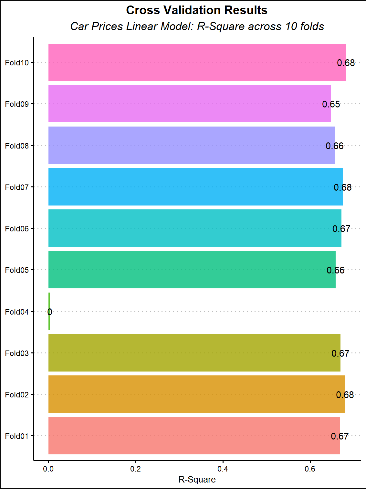

South African Car Prices
INTRODUCTION
South Africa has a plethora of online vehicle marketplaces. Often, their pool of vehicles for sale are usually > 50 000 on a daily basis. The vehicle listings offer a vast amount of car related data. Naturally, web-scraping the data provides an opportunity to fit a Machine-Learning model and endless exploration for petrol-heads (such as myself). Nearly all the online vehicle marketplaces have restrictive Terms and Conditions deterring the use of their data for commercial purposes and bombarding of their servers through web scrapping among other restrictions. Unfortunately, this means web scraping script cannot be shared in this post as it may reveal where the data were obtained, methodology of scraping the data etc. In addition, the website of the online vehicle marketplace will not be revealed.
WEB SCRAPING
To respect the Terms of Conditions, the scraping was throttled through the use of base R’s rpois function along with the Sys.sleep() function. Combining the two functions results in non-normal distribution of system sleep. System sleep essentially pauses R for the specified period. This step in the scrapping process is important to avoid sending to many requests to a website, perhaps, hoarding server capacity for other users. In this instance,scrapping all the webpages and pulling all listed vehicles on the day(2021-09-02), took 10 hours.
IMPORTING THE DATA
Below, we import the data and use dplyr::glimpse function to see the number of columns and values. The dataset contains a few important variables including the car_name and vehicle manufacturer. It is worth noting that the car_name variable appears to a free text field where the person listing the vehicle can modify the car name to include marketing terms such as: “excellent condition”,“reduce price” etc.
see code
Rows: 62,196
Columns: 10
$ car_name <chr> "9-3 Sport 2.0 Linear Lpt", "S40 2.0T", "V40 2.0"…
$ vehicle_manufacturer <chr> "Saab", "Volvo", "Volvo", "Hyundai", "Volvo", "Ho…
$ year <dbl> 2007, 1999, 2001, 2000, 2000, 1998, 1996, 1996, 2…
$ mileage <dbl> 200000, 285000, 271000, 125000, 190000, 267000, 1…
$ price <dbl> 13700, 18900, 18900, 20000, 20900, 21900, 21900, …
$ fuel_type <chr> "Petrol", "Petrol", "Petrol", "Petrol", "Petrol",…
$ transmission <chr> "Manual", "Manual", "Manual", "Manual", "Automati…
$ dealership <chr> "Mahala Motors", "WeBuyCars Midstream", "WeBuyCar…
$ city_town <chr> "Klerksdorp", "Centurion", "Cape Town", "Johannes…
$ province <chr> "North West Province", "Gauteng", "Western Cape",…Similarly, the free text field, also means that vehicle naming conventions deviate from the vehicle manufacturer specifications. Other text variables also contain these anomalous changes in text. The code below demonstrates an example of idiosyncrasies.
# A tibble: 4 × 10
car_name vehicle_manufacturer year mileage price fuel_type transmission
<chr> <chr> <dbl> <dbl> <dbl> <chr> <chr>
1 Focus Excell… Ford 2008 305000 69950 Petrol Manual
2 Utility 1.4 … Chevrolet 2015 198000 114900 Petrol Manual
3 Clio Excelle… Renault 2019 55000 160000 Petrol Manual
4 Ranger Excel… Ford 2017 107000 299900 Diesel Automatic
# ℹ 3 more variables: dealership <chr>, city_town <chr>, province <chr>DATA PREPROCESSING
We would like to fit a model to better understand the determinants of vehicle prices. Here, pre-processing is important is especially important. Tidymodels and the textrecipes offer a range of functions to handle the whole modelling workflow. Below, are a number of pre-processing steps, firstly we use the unnest_tokens function from the tidytext package to process the the car_name variable. Thereafter, we handle the numerical values by applying a logarithm to outcome variable and standardising mileage. Finally, we use step_tokenize, step_tokenfilter and step_tf to tokenise, filter the those tokens and ultimately convert the tokens to a term frequency variables.
see code
Useful_Car_Names <- Car_Data %>%
unnest_tokens(car_name,
output="car_name") %>%
group_by(vehicle_manufacturer,car_name) %>%
summarise(n(),.groups = "drop") %>%
arrange(desc(`n()`)) %>%
anti_join(stop_words %>%
rename(car_name=word)) %>%
filter(!str_detect(car_name,"\\d{1,}"))
Car_Data <- Car_Data %>%
unnest_tokens(car_name,output = "car_name") %>%
semi_join(Useful_Car_Names %>%
select(car_name,vehicle_manufacturer)) %>%
group_by(across(-car_name)) %>%
summarise(car_name = as.character(list(c(car_name))),
.groups = "drop") %>%
mutate(car_name = str_replace(car_name,
'c[[:punct:]]{2,}',""),
car_name = str_replace_all(car_name,
'\\"',""),
car_name = str_replace_all(car_name,
'[[:punct:]]{1,}$',""),
age = 2021-year)
Car_Data <- Car_Data %>%
mutate(across(c(car_name,dealership,city_town),
.fns = as_factor))
New_Car_Data <- recipe(price ~ .,data = Car_Data) %>%
step_log(all_outcomes()) %>%
step_normalize(mileage) %>%
step_tokenize(c(dealership,city_town,car_name)) %>%
step_tokenfilter(c(dealership,city_town,car_name)) %>%
step_tf(c(dealership,city_town,car_name)) %>%
step_dummy(c(vehicle_manufacturer,province,
fuel_type,transmission)) %>%
step_nzv(all_predictors()) %>%
prep() %>%
bake(Car_Data)LASSO IT ONCE, LASSO IT UNTIL YOU CAN ALSO NO MORE
The resulting dataset contains 59417 rows across 27 variables. Given the dimension above, it prudent to do some additional feature select. LASSO regression helps with variable selection. In turn, we use the LASSO regression results to filter for the appropriate variables. The final variable set yields 24 predictor variables. The code below contains all details the LASSO implementation and subsequent filtering.
see code
New_Car_Data <- New_Car_Data %>%
select(-year)
Car_split <- initial_split(New_Car_Data)
Car_Training <- training(Car_split)
Car_Test <- testing(Car_split)
X <- model.matrix(price~.,Car_Training)[,-1]
Y <- Car_Training$price
lasso_model <- glmnet(x = X,y=Y,
alpha=1)
variable_extractor <- function(a_list){
min_lambda <- data.frame(best_lambda =a_list[["lambda"]]==min(a_list[["lambda"]]))
min_lambda <- cbind.data.frame(data.frame(index = rownames(min_lambda)),
min_lambda)
min_lambda <- min_lambda %>%
filter(best_lambda == TRUE)
min_lambda <- as.double(unique(min_lambda$index))
lasso_variables <-
as.matrix(coef(a_list))|>data.frame()
lasso_variables <- cbind.data.frame(variables = rownames(lasso_variables),
lasso_variables)
lasso_variables <- tibble(lasso_variables)
lasso_variables <- lasso_variables[,c(1,min_lambda+1)]
names(lasso_variables) <- c("variable","importance")
lasso_variables <- lasso_variables %>%
filter(variable != "(Intercept)",
importance != 0.00000000) %>%
arrange(desc(importance))
return(lasso_variables)
}
Variables <- variable_extractor(lasso_model)
Car_Training <- Car_Training[,c("price",Variables$variable)]
Car_Test <- Car_Test[,c("price",Variables$variable)]CROSS VALIDATION
Before fitting to the test dataset, it worth investigating whether our model performs well against “shuffled” dataset of our training data. Fortunately, tidymodels and parsnip contain several functions to assist with the exercise.
Here, we use the vfold_cv function to split our training data into random splits of equal size. Next, we use workflow to fit a linear model on the random splits. Subsequently, we plot the r-squares across all the folds.
Ultimately, cross validation helps us understand the performance of our model set of datasets by iterating through the training and test sample of each fold. The code below illustrates an implementation of cross validation.
see code
Car_Training_cv <- vfold_cv(Car_Training)
linear_model <- linear_reg() %>%
set_engine("lm")
cv_outcomes <- workflow() %>%
add_model(linear_model) %>%
add_formula(price ~.) %>%
fit_resamples(Car_Training_cv) %>%
select(id,.metrics) %>%
unnest(.metrics) %>%
filter(.metric == "rsq") %>%
select(id,.metric,.estimator,.estimate)
cv_plot <- cv_outcomes %>%
ggplot(aes(id,.estimate,group=1,fill=id))+
geom_col(show.legend = FALSE,alpha=0.8)+
geom_text(aes(label=round(.estimate,2)))+
coord_flip()+
labs(title = "Cross Validation Results",
subtitle = "Car Prices Linear Model: R-Square across 10 folds",
x=NULL,
y = "R-Square")+
theme(plot.title = element_text(family = "Arial Narrow",
hjust = 0.5),
plot.subtitle = element_text(family = "Arial Narrow",
hjust = 0.5,face = "italic"))
TESTING PERFORMANCE OF A OUT-OF-SAMPLE SET
Our model had an mean r-square of 0.62. Indicating that 62% of the variation in vehicle prices is explained by the variables in our dataset. To test whether the r-square remains stable on an unseen dataset, we fit the model to our test sample. The table below illustrates the results of linear regression below.
| price | |||||
| Predictors | Estimates | std. Beta | CI | standardized CI | p |
| (Intercept) | 13.48 | 0.00 | 13.46 – 13.50 | -0.01 – 0.01 | <0.001 |
| vehicle manufacturer Mercedes Benz |
0.35 | 0.14 | 0.32 – 0.38 | 0.12 – 0.15 | <0.001 |
| vehicle manufacturer BMW | 0.25 | 0.09 | 0.22 – 0.27 | 0.08 – 0.10 | <0.001 |
| tf car name tsi | 0.20 | 0.08 | 0.17 – 0.23 | 0.06 – 0.09 | <0.001 |
| vehicle manufacturer Toyota |
0.18 | 0.10 | 0.16 – 0.21 | 0.08 – 0.11 | <0.001 |
| tf car name double | 0.15 | 0.06 | 0.12 – 0.19 | 0.05 – 0.08 | <0.001 |
| vehicle manufacturer Volkswagen |
0.08 | 0.04 | 0.05 – 0.11 | 0.02 – 0.06 | <0.001 |
| tf city town pretoria | 0.02 | 0.01 | -0.00 – 0.03 | -0.00 – 0.02 | 0.129 |
| vehicle manufacturer Ford | 0.04 | 0.02 | 0.01 – 0.06 | 0.01 – 0.03 | 0.003 |
| tf car name cab | 0.00 | 0.00 | -0.03 – 0.04 | -0.01 – 0.02 | 0.885 |
| mileage | -0.06 | -0.02 | -0.09 – -0.04 | -0.03 – -0.01 | <0.001 |
| province Western Cape | -0.01 | -0.01 | -0.03 – 0.01 | -0.02 – 0.00 | 0.292 |
| vehicle manufacturer Nissan |
-0.01 | -0.00 | -0.04 – 0.02 | -0.01 – 0.01 | 0.562 |
| tf dealership cars | -0.01 | -0.00 | -0.03 – 0.01 | -0.01 – 0.01 | 0.434 |
| province Kwazulu Natal | -0.02 | -0.01 | -0.04 – 0.01 | -0.02 – 0.00 | 0.149 |
| tf dealership motors | -0.01 | -0.01 | -0.03 – 0.01 | -0.02 – 0.00 | 0.226 |
| vehicle manufacturer Hyundai |
-0.06 | -0.02 | -0.09 – -0.03 | -0.03 – -0.01 | <0.001 |
| tf dealership toyota | -0.07 | -0.03 | -0.10 – -0.05 | -0.04 – -0.02 | <0.001 |
| age | -0.08 | -0.53 | -0.08 – -0.08 | -0.54 – -0.52 | <0.001 |
| tf car name dr | -0.07 | -0.04 | -0.10 – -0.05 | -0.05 – -0.03 | <0.001 |
| tf car name polo | -0.11 | -0.05 | -0.14 – -0.07 | -0.06 – -0.03 | <0.001 |
| tf city town johannesburg | -0.11 | -0.05 | -0.14 – -0.09 | -0.06 – -0.04 | <0.001 |
| tf car name auto | -0.30 | -0.23 | -0.32 – -0.28 | -0.24 – -0.21 | <0.001 |
| fuel type Petrol | -0.36 | -0.24 | -0.37 – -0.34 | -0.25 – -0.23 | <0.001 |
| transmission Manual | -0.73 | -0.54 | -0.75 – -0.71 | -0.55 – -0.52 | <0.001 |
| Observations | 14855 | ||||
| R2 / R2 adjusted | 0.664 / 0.664 | ||||
According to the results above, statistically significant variables include the vehicle manufacturer, vehicle name,vehicle age,transmission_type and fuel_type. Top among these are Mercedes Benz, BMW,Toyota and Volkswagen. Vehicles with the terms such as: “tsi”,“double”,“cab”,“dr” and “auto”. Interesting, “tsi” is a fuel type designation among Volkswagen group vehicles. Similarly, “double” and “cab” usually denote the bakkie (pickup truck) segment in South Africa. Other vehicle segment key word is “dr” which usually indicate a coupe or two-door saloon vehicle.
CONCLUSION
In example, we have found the determinants of vehicle prices from the scraped dataset. The results are in line with vehicle sales in South Africa. Mercedes Benz, BMW, Toyota and Volkswagen, Ford and Hyundai vehicles constantly feature among top selling vehicles in South Africa. As expected, vehicle age and vehicle mileage are statistically significant factors that influence prices. To enhance the analysis, it may be worthwhile to scrape more variables such as vehicle description, listing date, options list, vehicle conditions and colour.
REFERENCE
Wickham et al.,2019. Welcome to the tidyverse. Journal of Open Source Software, 4(43), 1686, https://doi.org/10.21105/joss.01686
Sam Firke, 2021. janitor: Simple Tools for Examining and Cleaning Dirty Data. R package version 2.1.0. https://CRAN.R-project.org/package=janitor
Hadley Wickham and Jennifer Bryan, 2019. readxl: Read Excel Files. R package version 1.3.1. https://CRAN.R-project.org/package=readxl
Jeroen Ooms, 2021. writexl: Export Data Frames to Excel ‘xlsx’ Format. R package version 1.4.0. https://CRAN.R-project.org/package=writexl
Jeffrey B. Arnold. 2021. ggthemes: Extra Themes, Scales and Geoms for ‘ggplot2’. R package version 4.2.4. https://CRAN.R-project.org/package=ggthemes
Kuhn et al., 2020. Tidymodels: a collection of packages for modeling and machine learning using tidyverse principles. https://www.tidymodels.org
Emil Hvitfeldt. 2021. textrecipes: Extra ‘Recipes’ for Text Processing. R package version 0.4.1. https://CRAN.R-project.org/package=textrecipes
Silge J, Robinson, D. 2016. “tidytext: Text Mining and Analysis Using Tidy Data Principles in R.” JOSS, 1(3). doi: 10.21105/joss.00037. https://doi.org/10.21105/joss.00037
Jerome Friedman, Trevor Hastie, Robert Tibshirani. 2010. Regularization Paths for Generalized Linear Models via Coordinate Descent. Journal of Statistical Software, 33(1), 1-22. https://www.jstatsoft.org/v33/i01/
Julia Silge, Fanny Chow, Max Kuhn and Hadley Wickham. 2021. rsample: General Resampling Infrastructure. R package version 0.1.1. https://CRAN.R-project.org/package=rsample
Max Kuhn and Davis Vaughan (2021). parsnip: A Common API to Modeling and Analysis Functions. https://parsnip.tidymodels.org, https://github.com/tidymodels/parsnip
Lüdecke D. 2021. sjPlot: Data Visualization for Statistics in Social Science. R package version 2.8.10. https://CRAN.R-project.org/package=sjPlot
Lüdecke D. 2021. sjlabelled: Labelled Data Utility Functions (Version 1.1.8). doi: 10.5281/zenodo.1249215. https://doi.org/10.5281/zenodo.1249215.